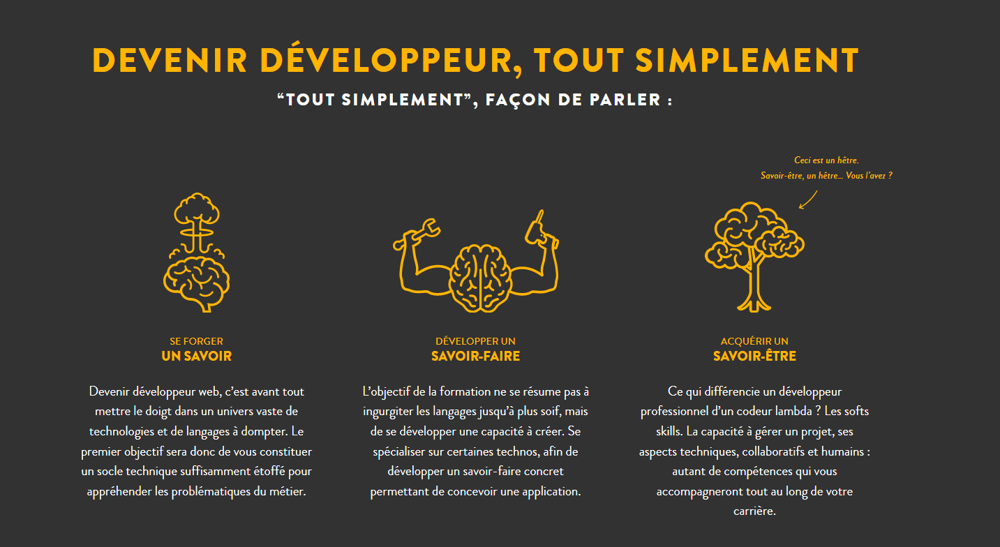

Exercice 1 sur le fond bordure du tp_html_css
Exercice 2 sur le fond bordure du tp_html_css

Les sélecteurs d'images clés CSS permettent d'identifier les points précis d'une chronologie d'animation où les styles d'images clés doivent être appliqués. Ces sélecteurs sont utilisés exclusivement dans la @keyframesrègle @.
Le sélecteur d'attributs CSS permet de sélectionner les éléments en fonction de la présence d'un attribut donné explicitement défini, avec des options pour définir une correspondance par valeur d'attribut ou par sous-chaîne.
Le sélecteur d'ID CSS permet de sélectionner un élément en fonction de la valeur de son idattribut. Pour que l'élément soit sélectionné, son idattribut doit correspondre exactement à la valeur spécifiée dans le sélecteur.
Le sélecteur de type CSS cible les éléments par leur nom de nœud. Autrement dit, il sélectionne tous les éléments du type spécifié dans un document.
La propriété CSS ` radius` arrondit les angles du bord extérieur d'un élément. Vous pouvez définir un seul rayon pour obtenir des angles circulaires, ou deux rayons pour obtenir des angles elliptiques.border-radius
Des exemples de mises en page courantes que vous pourriez avoir besoin d'implémenter sur vos sites. Ces exemples fournissent du code utilisable comme point de départ dans vos projets. Ils mettent également en lumière les différentes manières d'utiliser les spécifications de mise en page et les choix qui s'offrent à vous en tant que développeur.
Ma Super Carte
Ceci est un exemple de composant UI réalisé avec du CSS simple.